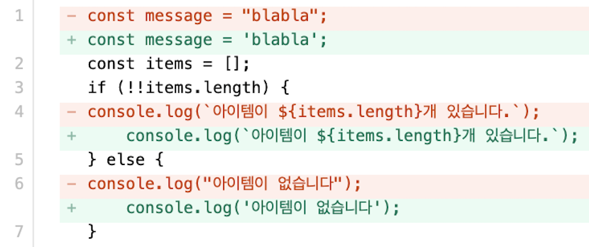

오랜만에 개인 프로젝트를 시작하면서 프로젝트에 ESLint, Prettier 를 적용해 보기로 했습니다. 혼자 진행하는 프로젝트라 굳이 필요할까 싶지만, 항상 ESLint, Prettier의 도움을 받아왔기 때문에 막상 없으면 불편할 것 같았고, 회사에서는 이미 세팅된 저장소에서만 작업하다 보니 직접 관련 설정을 건드릴 기회가 없어 이번 기회에 직접 세팅해 보기로 하였습니다.
포스팅으로 정리하는 만큼 코드 퀄리티와 포맷팅이 왜 필요한지부터 하나씩 정리해가며 프로젝트에 ESLint 와 Prettier 를 적용해 보도록 하겠습니다.
코드 퀄리티, 포맷은 왜 관리하는걸까?
코드 퀄리티는 말 그대로 코드 품질에 대한 관리를 말합니다.
코드 퀄리티를 관리하면 주석이나 사용되지 않는 코드, 디버깅을 위한 코드, 에러를 유발할 수 있는 코드 등 운영 환경에 필요하지 않거나 위험이 되는 코드가 운영 환경에 포함되지 않도록 할 수 있어 사용자에게 보다 안정적으로 서비스를 제공할 수 있을 뿐만 아니라 개발자 경험도 향상시킬 수 있습니다.
코드 포맷팅은 코드를 작성하는 스타일을 말하며, 개인의 취향이 반영되는 부분입니다.
여러 명의 개발자가 하나의 프로젝트를 진행하게 되면 프로젝트 내에 다양한 코드 포맷이 혼재하게 됩니다. '코드 포맷이 다를 수도 있지 않나?'정도로 생각할 수 있지만, 경험해본 바로는 작업자가 많아질수록 점점 코드 읽기가 어려워져 코드 리뷰, 유지보수, 장애 대응 시 불필요한 에너지를 소모하게 되는 불편함이 있었습니다.
코드 포맷을 관리하면 앞에서 언급한 불편함을 줄일 수 있어 생산성 향상을 기대할 수 있습니다.
때문에 이미 많은 프로젝트에서 코드 퀄리티와 포맷팅을 관리하여 이점을 누리고 있습니다. 추가로 코드 퀄리티와 포맷팅 관리를 쉽게 해줄 수 있는 ESLint, Prettier 와 같은 툴들을 사용하면 큰 노력 없이 몇 가지 설정만으로 어느 정도 코드 퀄리티의 보장을 기대할 수 있습니다.
이제부터 코드 퀄리티, 포맷팅 관리를 위한 툴을 알아보고 설정 및 사용법, 자동화하는 방법까지 하나씩 알아보도록 하겠습니다.
코드 퀄리티 관리
코드 퀄리티 관리는 ESLint라는 패키지를 사용하여 관리합니다. ESLint 는 코드 퀄리티 관리를 위해 가장 많이 사용되는 패키지로 해당 패키지를 사용하여 코드 퀄리티 관리를 위한 규칙을 설정하고 해당 규칙을 강제로 적용하거나 관련 리포트를 제공받아 코드 퀄리티를 관리할 수 있습니다.
Install
ESLint 를 프로젝트의 devDependencies 패키지로 설치합니다.
1 | npm i -D eslint |
Configuration File
ESLint 설정을 위해 설정 파일을 생성해 줘야 하는데 아래와 같이 간단한 명령어를 통해 기본적인 설정 파일을 생성할 수 있습니다.
1 | npm init @eslint/config |
위 명령어를 실행하면 아래와 같이 단계별로 선택지가 나오며 최종 선택까지 완료하면 .eslintrc.js 와 같은 설정 파일이 root/ 디렉토리에 생성됩니다.
1 | How would you like to use ESLint? · problems |
ESLint 설정 파일은 아래와 같은 형식으로 관리되며 js, json, yaml 같은 확장자를 지원합니다. 자세한 내용은 공식문서 설정 가이드를 참고해주세요.
1 | // .eslintrc.js |
ESLint 규칙은 설정파일 내에서 extends, rules 두 곳에 위치할 수 있습니다.
- extends: 미리 준비된 ESLint configuration을 확장하는 경우 사용
1
2
3module.exports = {
extends: ["eslint:recommended", "airbnb"],
}; - rules: ESLint에 적용할 규칙 직접 선언하는 경우 사용
1
2
3
4
5
6module.exports = {
rules: {
"no-console": ["error", { allow: ["warn", "error"] }],
"no-unused-vars": ["error", { vars: "all", args: "after-used" }],
},
};
설정 가능한 규칙 가이드를 보면 아래 Rules Group 과 같이 그룹핑 되어 있고 각 규칙 앞에 Info Icon 과 같은 아이콘을 표시하고 있습니다.
Rules Group
Possible Problems: 논리적인 에러 관련 규칙- no-unused-vars : 사용하지 않은 변수 불허 강제
Suggestions: 논리적 에러가 아닌 강제할 수 있는 규칙- camelcase : Camel 네이밍 컨벤션 강제
- no-console : console 사용 불가 강제
Layout & Formatting: 코드가 보이는 방식에 대한 규칙- semi : 세미콜론 여부 규칙
- quote : 큰따옴표, 작은 따옴표, 백틱표기 규칙
Info Icon
- ✓ :
"extends": "eslint:recommended"선언시 적용되는 규칙 - 🔧 : ESLint CLI 실행시
--fix옵션 붙여져 있다면 자동으로 고쳐지는 규칙 - 💡: 자동으로 고쳐지지 않기 때문에 직접 고쳐야 하는 규칙
특징적인 부분은 Rules Group 의 Layout & Formatting 에서 보여지듯이 코드 퀄리티와 관련된 규칙뿐만 아니라 포맷팅 관련 규칙도 지정할 수 있다는 것 입니다. 뒤에서 다루겠지만 보통 코드 포맷팅은 Prettier 가 담당하기 때문에 헷갈릴 수 있으며, 실제로도 Prettier 의 포맷팅 규칙과 충돌하여 의도한 것과 다른 포맷이 코드에 적용 될 수도 있습니다.
때문에 Prettier 와 같이 사용할 경우 포맷팅 규칙에 대해 주의하여 사용할 필요가 있습니다. 포맷팅 규칙 이슈는 ESLint & Prettier 적용하면서 자세히 알아보도록 하겠습니다.
Command Line Interface
설정파일 작성이 끝났다면 아래와 같이 ESLint CLI 를 사용하여 코드 퀄리티 검증을 수행할 수 있으며 --fix 옵션을 사용하여 자동으로 코드를 수정하게 할 수도 있습니다.
1 | eslint src/**/*.js --fix |
--fix외 자세한 옵션은 CLI 가이드를 확인해주세요.
Practice
앞에서 코드 퀄리티 관리를 위한 ESLint의 설치, 설정파일, CLI 까지 간략하게 살펴 보았습니다. 지금부터는 ESLint 설정에 따라 ESLint 가 실제로 어떻게 동작하는지 확인해 보겠습니다.
-
테스트를 위해 설정 파일
.eslintrc.js를 아래와 같이 작성합니다.1
2
3
4
5
6module.exports = {
rules: {
"no-console": ["error", { allow: ["warn", "error"] }], // 콘솔 X
"no-unused-vars": ["error", { vars: "all", args: "after-used" }], // 사용하지 않는 변수 X
},
}; -
ESLint를 실행할 파일
test.js를 생성하고 아래와 같이 코드를 작성합니다.1
2
3const message = "blabla";
const items = fetchItems(params);
console.log(items); -
test.js파일에 대해 ESLint 를 실행합니다.1
eslint ./test.js --fix
ESLint 설정 파일에 콘솔과 사용하지 않은 변수에 대해
"error"로 판단하도록 설정하였기 때문에 아래와 같은 결과를 출력하게 됩니다.1
21:7 error 'message' is assigned a value but never used no-unused-vars
3:1 error Unexpected console statement no-console
코드 포맷팅 관리
코드 포맷팅 관리는 Prettier 라는 패키지를 사용하여 관리합니다. 작업자가 여러명인 프로젝트에서도 일관된 코드 스타일을 유지시켜주는 역할을 합니다.
Install
Prettier 를 프로젝트의 devDependencies 패키지로 설치합니다.
1 | npm install -D --save-exact prettier |
Configuration File
Prettier 설정은 package.json 이나 .prettierrc.js 와 같은 별도의 설정 파일을 생성하여 사용하는데 지원 형식은 아래와 같습니다.
package.json파일 내"prettier"키에 설정JSON,YAML로 작성된.prettierrc파일.prettierrc.json,.prettierrc.yml,.prettierrc.yaml,.prettierrc.json5,.prettierrc.toml파일.prettierrc.js,.prettierrc.cjs,prettier.config.js,prettier.config.cjs와 같이module.exports사용하여 설정 객체를export한 파일
설정 파일을 별도로 생성하는 경우 아래와 같이 Prettier 포맷팅 규칙을 선언합니다.
1 | // .prettierrc.js |
설정 파일과 규칙에 대한 자세한 내용은 설정파일 가이드, 규칙 가이드를 참고해주세요.
Command Line Interface
command line 으로 prettier 를 실행하기 위해 아래 명령어를 터미널에서 실행합니다. --write 옵션은 ESLint 의 --fix 옵션과 같은 역할을 하는 옵션으로 자동으로 포맷을 수정시킬 수 있습니다.
1 | prettier src/**/*.js --write |
--write 외 자세한 옵션은 CLI 가이드를 참고해 주세요.
Practice
-
테스트를 위해 설정 파일
.prettierrc.js를 아래와 같이 작성합니다.1
2
3
4module.exports = {
tabWidth: 4,
singleQuote: true,
}; -
Prettier 를 실행할 파일
test.js를 생성하고 아래와 같이 코드를 작성합니다.1
2
3
4
5
6
7const message = "blabla";
const items = [];
if (!!items.length) {
console.log(`아이템이 ${items.length}개 있습니다.`);
} else {
console.log("아이템이 없습니다");
} -
test.js파일에 대해 Prettier 를 실행합니다.1
prettier ./test.js --write
Prettier 실행 후 Diff 를 보면 아래와 같이 설정한 포맷팅에 대해 적용된 것을 확인할 수 있습니다.

End
지금까지 코드 퀄리티 관리를 위한 ESLint 와 코드 포맷팅을 위한 Prettier 에 대해 알아봤습니다. 다음 편에서는 프로젝트에 ESLint 와 Prettier 를 적용하는 방법에 대해서 알아 보도록 하겠습니다.
궁금한 점이나 잘 못된 내용이 있으면 피드백 부탁드립니다.
읽어주셔서 감사합니다.